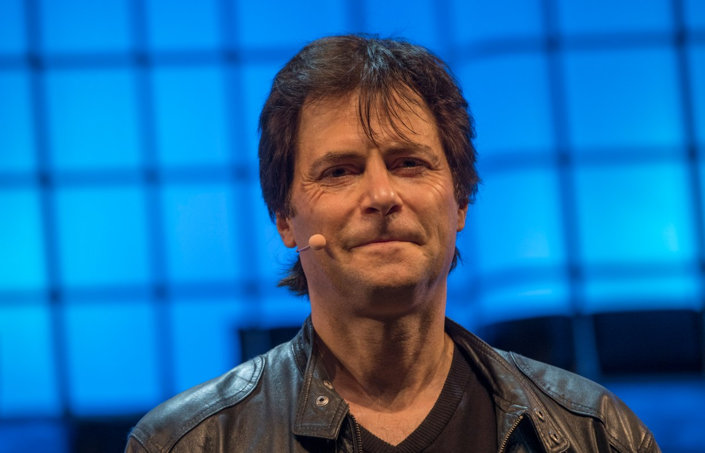
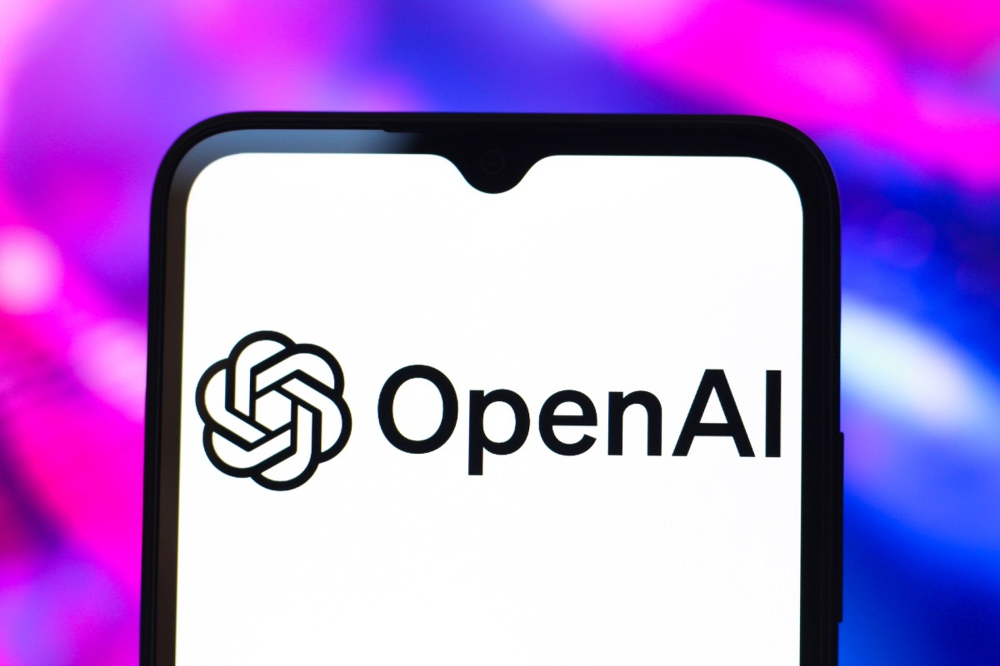
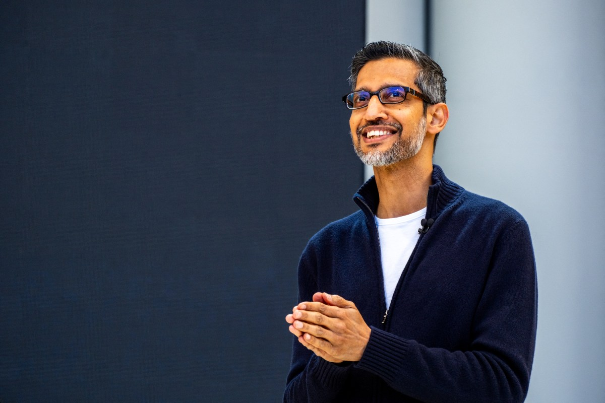

AI DAILY
AI 行业日报
2026年3月9日 · 精选 8 条
01技术突破
OpenClaw 100天登顶GitHub星标榜首，Token消耗暴涨1000倍

开源 AI Agent 框架 OpenClaw 上线仅 100 天，GitHub 星标突破 12 万，超越 LangChain 成为增长最快的 AI 开源项目。其核心卖点是「零配置多 Agent 协作」——开发者只需定义目标，框架自动拆分任务、分配角色、协调执行。
但代价不小：社区统计显示，使用 OpenClaw 构建的典型应用，单次任务 Token 消耗是传统 Chain 模式的 1000 倍。OpenAI 和 Anthropic 的 API 用量在过去一个月内因 Agent 框架的普及出现了 3 倍增长。
INSIGHT
Agent 让开发者写得更少，模型厂商赚得更多。1000 倍 Token 消耗是个有趣的数字——它意味着你省下的人力成本，正在以 API 账单的形式回来。对构建者来说，真正的问题不是「能不能用 Agent」，而是「这个任务值不值 1000 倍的推理成本」。
02市场数据
Kimi付费订单暴涨80倍，20天收入超全年

月之暗面旗下 Kimi 在推出新版 k2 模型后，付费订单量在 20 天内暴涨 80 倍。据知情人士向媒体透露，这 20 天的付费收入已经超过 2025 全年。核心驱动力是 k2 在代码生成和长文档理解上的质变——部分用户反馈其代码能力已接近 Claude Sonnet 水平。
Kimi 目前月活约 3600 万，付费转化率从不足 1% 跃升至约 5%。月之暗面同时宣布企业版 API 价格下调 40%，试图在 B 端复制 C 端的增长曲线。
INSIGHT
80 倍不是营销数字，是模型能力突破付费阈值的信号。当 AI 产品从「免费试试」变成「值得掏钱」，中间只差一次让用户说「这东西真能干活」的体验。Kimi 证明了一件事：在中国市场，用户不是不愿付费，是之前没遇到值得付费的 AI。
03人事变动
千问核心团队出走：30亿花了，骨干走了
阿里通义千问团队近期出现大规模人员流失。据多个信源确认，千问预训练组负责人、RLHF 技术负责人、多模态核心研究员等至少 7 名骨干在过去两个月内离职，多数加入了创业公司或竞对。阿里在千问项目上累计投入超过 30 亿元。
离职潮的导火索被认为是组织架构调整——千问从独立事业部被并入阿里云智能集团，研发决策链拉长，部分核心人员的期权激励方案也在重组中被稀释。阿里方面回应称团队运转正常，千问 3.0 将在 Q2 如期发布。
INSIGHT
大公司做 AI 的经典困境：钱到位了，人却留不住。30 亿买来的不是护城河，是一群随时可以带着经验离开的大脑。当创业公司开出 3 倍薪资 + 联创身份时，大厂的职级天花板就变成了人才筛子。千问 3.0 能不能如期，取决于剩下的人能不能扛住。
04政策监管
数百专家联名：要求暂停超级智能研发

一份名为「Pro-Human Declaration」的公开信获得了超过 300 名 AI 研究者、伦理学家和前科技高管的联署。信中呼吁全球主要 AI 实验室立即暂停超级智能（ASI）相关研发，直到建立可验证的安全框架。签署者包括图灵奖得主 Yoshua Bengio 和前 OpenAI 安全团队负责人。
公开信特别点名了 OpenAI、Google DeepMind 和 Anthropic 的「能力竞赛」，认为当前的安全评估体系无法跟上模型能力的指数级增长。OpenAI 回应称已在内部部署多层安全测试，「暂停不是解决方案」。
INSIGHT
又一封公开信。上一封（2023 年）什么也没暂停，这一封大概率也不会。但值得注意的是，签署者从「围观学者」变成了「前核心员工」——这些人见过内部，依然选择站出来。对构建者而言，与其等监管落地，不如现在就想清楚：你的产品如果足够强大，谁来兜底？
05人事变动
OpenAI硬件高管因五角大楼交易辞职

OpenAI 硬件与设备副总裁 Mark Kalinowski 宣布辞职，据知情人士透露，导火索是 OpenAI 与美国国防部的一项 AI 合同。Kalinowski 在内部邮件中表示「无法认同公司在军事应用方向上的战略选择」。他在 OpenAI 任职不到 18 个月，此前负责自研芯片和边缘设备项目。
OpenAI 在今年 1 月正式取消了「禁止军事用途」的使用条款，随后与五角大楼签署了网络安全和情报分析方面的合作协议。这已是继安全团队负责人 Jan Leike 之后，又一位因价值观分歧离开的高管。
INSIGHT
OpenAI 正在用人事变动画出自己的边界线：愿意为军事合同买单的人留下，不愿意的人离开。从「造福全人类」到五角大楼合同，中间隔了不到两年。对创业者来说这是个提醒——你今天写下的使命宣言，能扛住多大的商业压力？
06行业动态
Google给Pichai 6.92亿美元薪酬包，绑定Waymo和Wing

Alphabet 在最新 SEC 文件中披露，CEO Sundar Pichai 的 2025 年薪酬总额为 6.92 亿美元，其中基本工资仅 200 万，其余全部为业绩挂钩的股票授予。这是美国上市公司 CEO 有记录以来第二高的年度薪酬方案。
薪酬方案的考核指标不只是搜索和云业务——Waymo 的商业化进展和 Wing 无人机配送被首次纳入 CEO 绩效评估。分析师认为这表明 Alphabet 董事会正在将「AI + 硬件」视为下一个十年的核心赌注。
INSIGHT
6.92 亿美元买的不是一个 CEO，是一张「AI + 自动驾驶 + 无人配送」的船票。把 Waymo 和 Wing 绑进 CEO 考核，说明 Google 终于不再把它们当实验室项目了。Pichai 的 KPI 就是 Google 的战略地图——搜索已经是过去式，未来押注在 AI 落地的物理世界。
07融资收购
00后大学生Vibe Coding 10天，陈天桥3000万投资
一名 00 后大学生用 Cursor + Claude 等 AI 编程工具，10 天内从零搭建了一款名为「MiroFish」的智能养鱼社区 App。产品上线首周下载量突破 5 万，被多个科技媒体报道后，获得盛大创始人陈天桥旗下基金 3000 万元天使轮投资。
MiroFish 的核心功能是AI 鱼病诊断——用户拍照上传，多模态模型识别鱼的品种、症状并给出治疗方案。开发者坦言自己「写的代码不到 10%，90% 是 AI 生成的」。陈天桥团队表示看中的不是代码质量，而是「AI 原生一代的产品直觉」。
INSIGHT
10 天、一个人、3000 万。这不是励志故事，是 Vibe Coding 时代的新常态预演。当「会不会写代码」不再是门槛，「能不能找到值得解决的问题」才是真正的稀缺能力。陈天桥投的不是一个养鱼 App，是在赌这一代人用 AI 做产品的方式。
08观点评论
a16z：SaaS没死，AI会让软件更有价值
a16z 合伙人 Martin Casado 发表长文反驳「SaaS 已死」论调。他用数据论证：2025 年全球 SaaS 市场规模仍在以 年增 15% 的速度扩张，头部 SaaS 公司的净收入留存率（NRR）反而从 110% 升至 125%，原因正是 AI 功能的追加销售。
Casado 的核心观点是：AI 不会取代 SaaS，而是让每个 SaaS 产品都变成「AI-native 软件」——用户为结果付费而非功能付费。他预测未来 3 年内，SaaS 定价模式将从按席位转向按产出（outcome-based pricing），这对能提供可衡量价值的公司是利好。
INSIGHT
a16z 当然会说 SaaS 没死——他们投了一堆 SaaS 公司。但数据不撒谎：NRR 从 110% 到 125% 说明老客户在为 AI 功能加钱。真正的拐点是定价模型的切换——当 SaaS 从「按人头收费」变成「按效果收费」，那些能证明自己真的省了客户的钱的产品，才能活过这一轮洗牌。
由 Zayen知览 整理 · 构建者视角